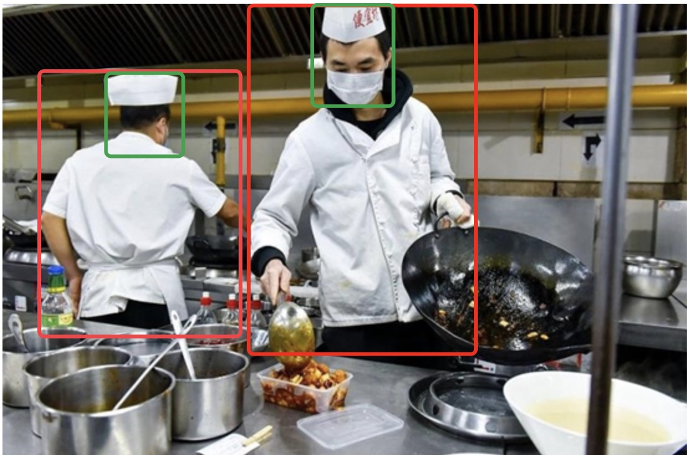
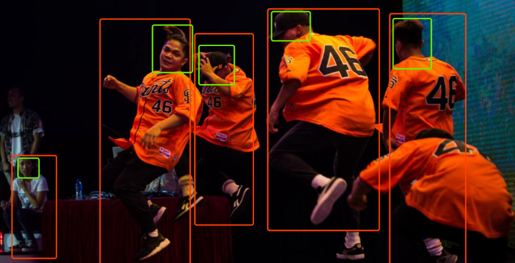

|
Shilong Zhang
I am currently an intern of the algorithm platform team of EIG research(EIG: Emerging Innovations Group, a BG of SenseTime) of SenseTime, led by kai Chen.
In 2019, I got my Bachelor degree from the University of Science and Tecnnology of China (USTC) and was awarded the title of outstanding graduates.
My research interests include computer vision and deep learning, particularly focusing on object detection and instance segmentation.
Email /
CV /
Github
|

|
- [2020/2/24] One paper was accepted by CVPR 2020..
- [2019/8/12] We won the first prize of FLAG-Detection in China Artificial Intelligence competition.
- [2019/6/28] I was selected as an outstanding graduate(73/1824 ≈ 4%) by USTC.
- [2019/1/28] Joined SenseTime Research as intern.
- January 2019 ～ present: Scale Variation in Object Detection (SenseTime Research)
I tried to solve the problem of scale variation in detection, so as to a detector with higher performance.
My most successful attempt was to rethink the role of FPN and Head in one-stage detector. Most of the results were shown in publication[1].
- May 2018 ~ August 2018: Motion Transfer (University of Science and Tecnnology of China),
I tried to use a Deep Generative Models to map motion information from source latent space to the target latent space. Although it didn't work out very well in the end, however I was very happy to learn the wonderful mathematics in generative models(VAE and GAN).
|

|
Sense Kitchen
We built a detector to detects anomaly behavior of chiefs in kitchens. Algorithmic solution is composed by two phases: object detection phase which detects human heads and body with high recall and classification phase which classifys if the behavior is anomalous.
We reproduced the FSAF and combined it with FreeAnchor to better deal with occlusion case and the imbalace of positive samples of objects with different sacles.
|
|
|
Sense Radar
This was originally a problem of image classification. The requirement was to distinguish whether there were guns and dangerous objects in the image.
But turning it into a detection problem made network easier to learn.
.
|
|

|
Person Detector(In process)
In order to provide an excellent pre-trained model for various human or face related tasks,
I have collected many open source datasets related to body and face to train a high performance detector.
In this project, I implemented the algorithm called Groupsoftmax,
which could union data sets of different annotation categories . Thanks to luobe chen.
I've also learned some techniques for dealing with crowded people.
.
|

|
[1] Scale-equalizing Pyramid Convolution for object detection
Xinjiang Wang*, Shilong Zhang* , Zhuoran Yu, Litong Zhang, Wayne Zhang
CVPR2020 (* Equal contribution),
We proposed a scale-equalizing pyramid convolution method that relaxes the discrepancy between the feature pyramid and the gaussian pyramid.
The module boosts the performance about 3.5 mAP in single-stage object detection with negligible inference time.
|

|
[2] Is Sampling Heuristics Necessary in Training Deep Object Detectors?
Joya Chen, Dong Liu, Tong Xu , Shilong Zhang, Shiwei Wu, Bin Luo, Enhong Chen
Under Review
We proposed a Sampling-Free mechanism, which is fully data diagnostic and thus avoids the laborious tuning of sampling hyper-parameters.
|
|